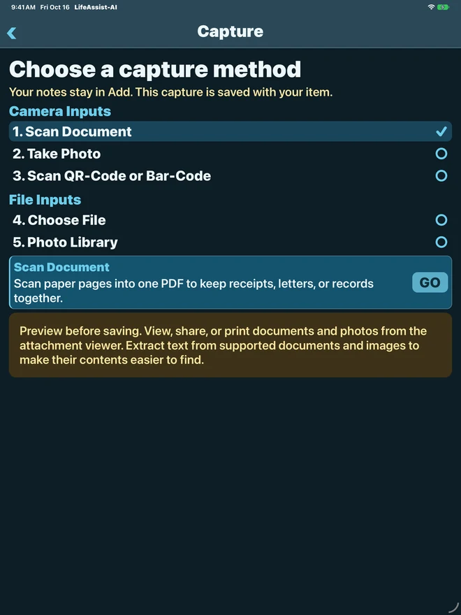
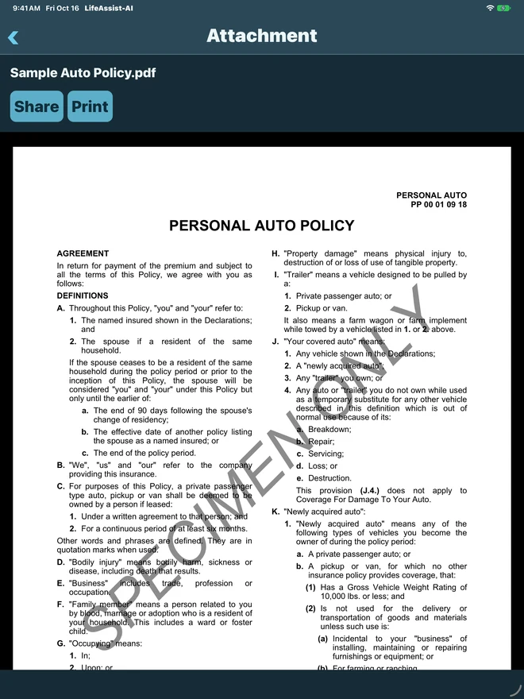
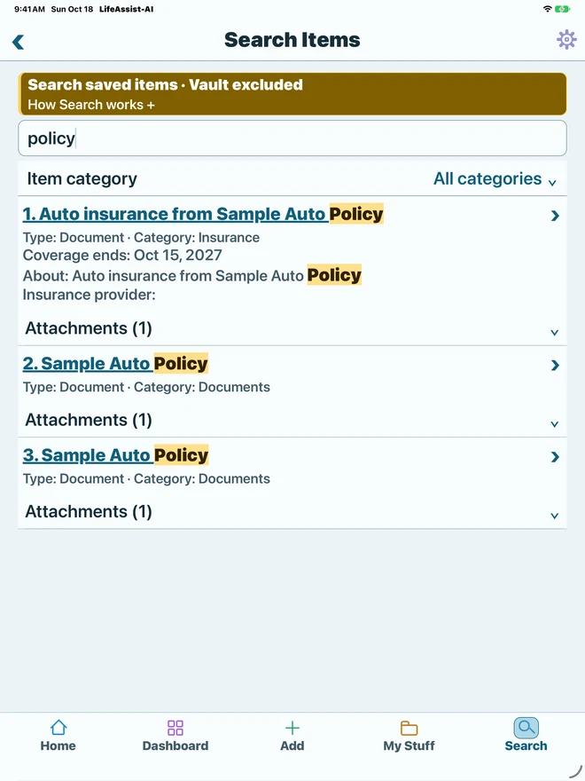
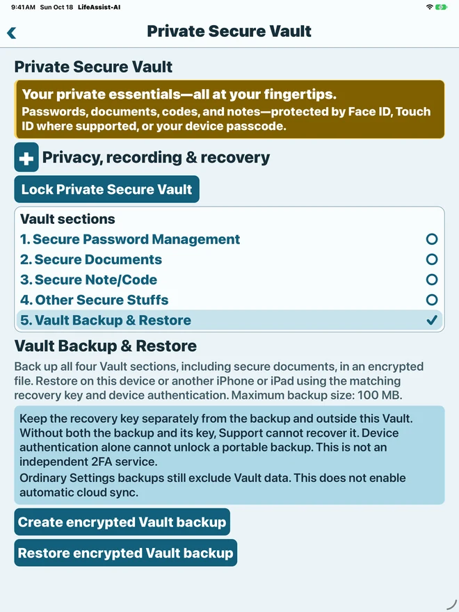
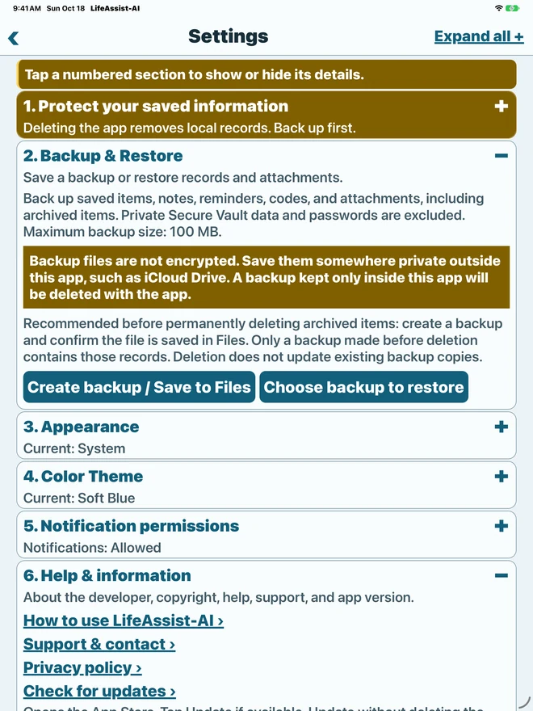

Organize
Items and reminders
Save notes, categories, and important dates. Add local reminders and see what needs your attention in Home and Dashboard.
LifeAssist-AI · iPhone & iPad
Keep receipts, documents, important dates, and reminders together. Scan what you need, save it with an Item, and find it again on your iPhone or iPad.
Version 1.0 · Release in preparation
Organize
Save notes, categories, and important dates. Add local reminders and see what needs your attention in Home and Dashboard.
Capture
Attach files and photos, or scan multiple pages into a PDF. Keep related documents with the Item they belong to.
Find
Recognize text in images and scans, extract embedded PDF text, and search your Items, file names, and saved text. Matching words are highlighted; short searches match whole words.
Save
Capture codes and store their values alongside an Item for later reference.
Use
Open supported images, text files, and PDFs. Share or print attachments and extracted text when you choose.
Keep local
Your records live in the app’s private storage. Core features work offline, without a sign-up step.
Home brings Add Something, Capture Something, Voice Input, and Private Secure Vault into one simple selection group. A checkmark and highlighted explanation show what comes next. Tap Continue when ready.
Browse categories in My Stuff, carry a selected category into Add, and find your way back without losing your place. See highlighted matching words in Search and select an attachment or code in Item Details to use one shared action area. Private Secure Vault brings passwords, secure documents, notes/codes, and other secure records into separate compact sections. Unlock with Face ID, Touch ID where supported, or your device passcode. Vault items stay outside ordinary Search and app backups. Comfortable layouts, five color palettes, Light and Dark appearance, and larger text support make the app easier to read on iPhone and iPad.
Keep typed notes, reviewed Voice Input, and a photo, scan, file, or code together in one Add draft. Save Item creates one record. Choose an item type and its matching alphabetical categories; suggested notes help you fill only what matters.
Expand grouped details when needed. Summaries distinguish saved content from empty sections. Set reminders before an event or expiry, including 1, 2, or 3 months ahead. Archive records for later, restore them with confirmation, or permanently delete selected archived items after making a verified backup.
Read the updated user guide or browse frequently asked questions.
Inside the app
These development-build images illustrate core features available on iPhone and iPad; layouts may differ from the latest interface. Follow the updated user guide for current steps. Sample documents are for demonstration.





See the workflows
Home, Dashboard, My Stuff, highlighted Search, and appearance.
Import a PDF through Files, organize it, save it, then open share and print options.
View a fictional sample document and review the warning before sharing a copy outside the Vault.
These silent previews were recorded in the iPad simulator. The document workflow uses file import. Document scanning requires a supported camera-capable device.
A simple routine
Give a receipt, household record, or important document a place with a title and notes.
Attach a document, scan a page or code, and set a reminder for an important date.
Browse My Stuff, check Dashboard, or search for information from saved documents.
Your information
Version 1.0 stores your records on your device and runs text recognition locally. It has no ads, account requirement, or live cloud AI service. Documents leave the app when you choose a sharing or printing destination.
Use LifeAssistAI app Settings menu → Backup & Restore to save a manual backup of ordinary records and attachments outside the app. There is no automatic cloud sync. Private Secure Vault data is excluded. Read the backup and restore guide.
The basic version 1.0 release is being prepared. An App Store download link will be added when the app is available.
For help with the app or a question about this release, visit User guide, Support or email angdembey.dra@gmail.com.